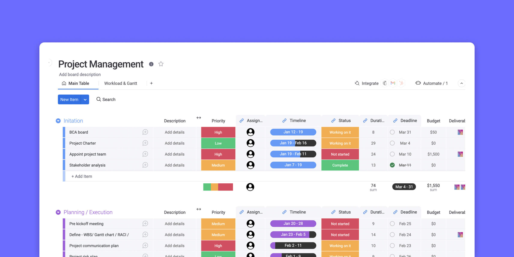
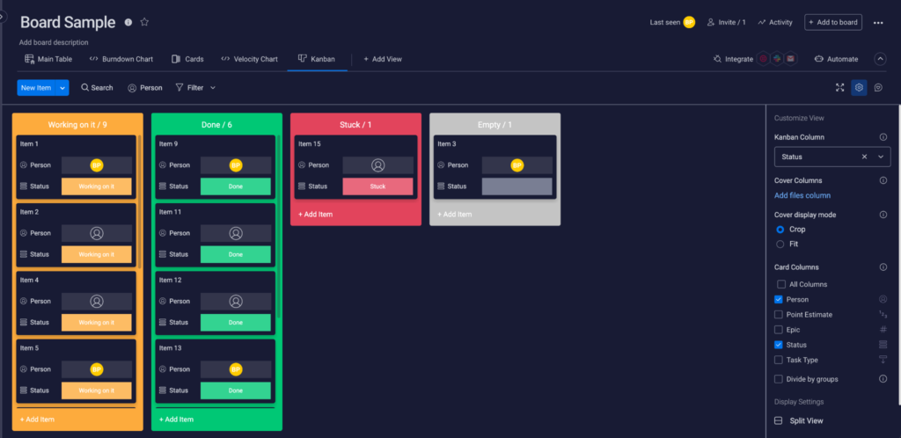
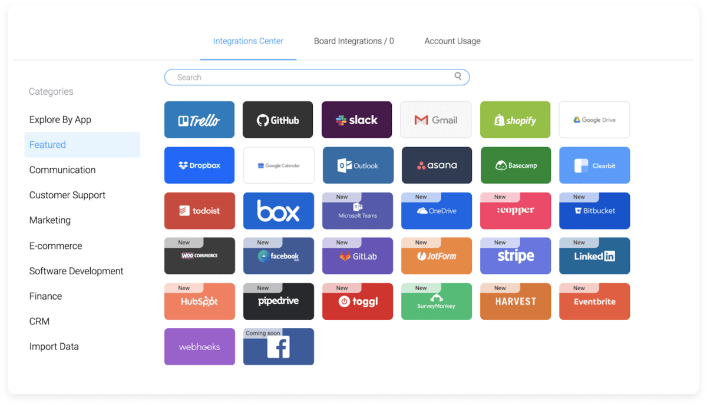
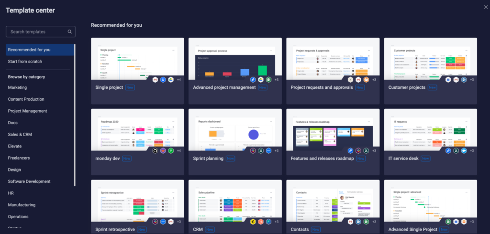
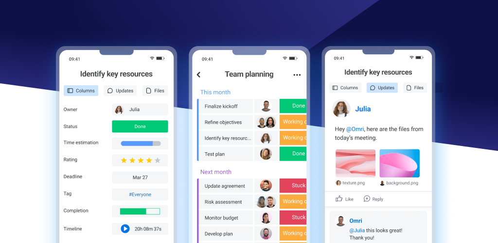

SHORT ON TIME? HERE’S A QUICK SUMMARY
Monday.com is a cloud-based project management tool that helps teams to collaborate, plan, track, and manage tasks and projects in real-time. The tool provides a visual interface that allows users to manage tasks and workflows using customizable boards, columns, and widgets. Serving over 152,000 customers in over 200 countries, it offers a flexible, scalable, and cost-effective project management framework. But is it the right solution for you? Let's dive into the advantages and disadvantages of Monday.com, so you can make a more informed decision.
Monday.com is a cloud-based project management tool that helps teams to collaborate, plan, track, and manage tasks and projects in real-time. The tool provides a visual interface that allows users to manage tasks and workflows using customizable boards, columns, and widgets. Serving over 152,000 customers in over 200 countries, it offers a flexible, scalable, and cost-effective project management framework. But is it the right solution for you? Let's dive into the advantages and disadvantages of Monday.com, so you can make a more informed decision.

👍 PROS:
- Fun and easy-to-use interface
- Robust collaboration tools
- Trusted by 152,000+ customers worldwide
- Built-in time tracking
- Tons of integrations
- Customizable reporting features
- Great desktop and mobile apps
- Simple drag-and-drop controls for the timeline and charts
- Unlimited time on the Free plan - No credit card required!
- Numerous tutorials and how-to guides available online
- 24/7 customer support
👎 CONS:
- Gantt charts and timelines are only available for higher-level plans
- Lower tiers have less space for files
Get Monday.com - Improve Your Productivity!
SEE WHAT USERS HAVE TO SAY
Trustpilot Rating: 4.1 out of 5 from 3,001 reviews
"As a new hire, onboarding could be very overwhelming, what with learning about the company, and keeping track of what you need to do. Monday.com provided a smooth transition for me. I always knew what I was supposed to be doing each time; it eliminated back-and-forth communication. I really enjoy using Monday."
"Since we implemented Monday.com in our company, we have taken our information management to a new level. Sometimes, it only takes a few minutes to implement a new process, which would have taken us days or weeks without Monday.com. This agility is definitely one of our strengths today. We are even developing apps and connectors through Monday's API to simplify access to all the information we have and integrate it with other data."
"I'm a social media coordinator/marketing specialist. I've used several different project management software programs for multiple different projects and brands that I've worked with. Monday.com is by far my favorite! It's very functional. I'm a very visual person, so I appreciate how visual monday.com is with the charts and the color coding. Thank you for an amazing product!"
HOW DOES IT WORK?
Monday.com works as a project management tool by providing a visual interface for teams to manage and track their projects and tasks. Here is an overview of how it works:
1. Creating a project: To get started with Monday.com, you can create a new project board and customize it to suit your needs. You can add columns, labels, and statuses, and choose from a variety of pre-built templates to save time.
2. Adding tasks: Once your project board is set up, you can add tasks and assign them to team members. You can set due dates, priorities, and add any necessary details, such as descriptions, attachments, and comments.
3. Collaborating: Collaborating on Monday.com is made easy for you and your team members. You can assign tasks, add comments, and share files with each other. The tool also ensures that you receive real-time updates and notifications to maintain consistency among your team members.
4. Tracking progress: As tasks are completed, team members can update their status, and the progress of the project can be tracked in real time. You can also use automation to streamline repetitive tasks and reduce manual effort.
5. Reporting and analytics: You can take advantage of the built-in reporting and analytics tools on Monday.com to track the progress of your projects, analyze trends, and generate custom reports. This can help you identify areas for improvement and showcase the success of your projects to your stakeholders.
WHO SHOULD USE MONDAY.COM?
Monday.com is a versatile project management tool that can be used by a wide range of individuals and teams across different industries. Here are some examples of who can benefit from using Monday.com:
Project managers: Monday.com provides project managers with a visual interface to manage their team's tasks and workflows. They can track progress, identify bottlenecks, and prioritize tasks to keep projects on track.
Marketing teams: Marketing teams can use Monday.com to manage campaigns, track leads, and collaborate on content creation. They can also use the tool to streamline approval workflows and manage social media campaigns.
IT teams: IT teams can use this tool to manage their projects, track tickets, and assign tasks to team members. They'll also find it useful in managing software development projects, tracking bugs, and managing releases.
HR teams: HR teams can also benefit by using this program to manage onboarding processes, track employee benefits, and manage performance reviews. They can also use the tool to collaborate on recruitment efforts and manage job postings.
Education and Non-Profit organizations: These organizations can use Monday.com to manage their projects, track donations, and manage volunteer assignments. They can also use it to streamline event planning and collaborate on grant proposals.
Overall, Monday.com is designed to facilitate collaboration, streamline workflows, and provide insights into project progress to help teams be more productive and efficient.
WHAT ARE THE FEATURES?
Monday.com is a top-tier project management tool, boasting a range of features that make it stand out from the competition. Here are some of the key features that make Monday.com a great choice:
Task Management
Monday.com has a variety of planning and task management features to help users stay organized and manage their workflows effectively.
Customizable task boards: Create your own unique workflows by customizing columns for each stage, and move tasks from one column to the next as they progress.
Task details: You can add task details such as descriptions, due dates, and tags to ensure that everyone on the team has the information they need to complete the task.
Calendar view: Monday.com includes a calendar view that provides a visual representation of project timelines, deadlines, and task progress.
Gantt charts: This lets you create and manage project timelines, set dependencies between tasks, and track progress in real-time.
Task dependencies: This is where you can set task dependencies, which means that one task must be completed before another can begin. This helps to ensure that tasks are completed in the correct order.
Workflow automation: Monday.com's workflow automation feature allows you to automate routine tasks, such as sending notifications, updating status columns, and assigning tasks to team members.
All in all, Monday.com's planning and task management functionalities are intended to help teams stay organized, monitor progress, and collaborate effectively. The software is highly customizable, enabling users to adjust their workflows to match their distinct requirements.
Workflow Automation
Monday.com is also known for its robust workflow automation feature that will help automate your routine tasks, reduce manual data entry, and streamline workflows. Monday.com provides several powerful features for workflow automation, including:
Custom automation rules: Create custom automation rules based on specific conditions, such as when a task is completed, a deadline is approaching, or a new item is added to a board.
Automated notifications: Monday.com can send notifications to team members when specific events occur, such as when a task is assigned to them, or a deadline is approaching.
Status updates: Automatically updates status columns based on changes to other columns or when certain conditions are met.
Task assignments: Monday.com can automatically assign tasks to team members based on specific criteria, such as workload or expertise.
Integration with third-party apps: This project management tool also integrates with a variety of third-party apps, such as Slack, Google Drive, and Trello, to further streamline workflows.
Visual project management
You can utilize a range of visual project management tools offered by Monday.com to gain a comprehensive view of your projects. This will help you keep track of all aspects of your projects and align them with your goals. These include:
Kanban boards: Kanban boards provide a visual representation of tasks and workflows, allowing you to see the status of each task at a glance. You can move tasks between columns to indicate progress.
Gantt charts: Monday.com's Gantt chart feature provides a clear, graphical view of a project's timeline, including task dependencies and milestones. This allows you to quickly recognize potential delays and make adjustments to the plan accordingly. With this feature, you can easily see how changes in one task can affect the overall timeline of the project.
Calendar view: The calendar view provides a visual representation of deadlines, milestones, and events, making it easy to keep track of important dates.
Timeline view: You can use this feature to visualize your project or task schedules over time easily. It displays a graphical representation of your tasks and deadlines, making it simple to track progress and stay on top of your project timeline.
Map view: This feature lets you visualize your data on a map. This can be useful for tracking locations, managing field teams, or visualizing data that is geographically dispersed.
Chart view: You can leverage a variety of chart and graph options to visualize your data for effective tracking of progress, data analysis, and trend identification. This will help you to deliver clear messages to your audience about the performance of your data.
Collaboration
Monday.com offers a range of collaboration tools that enable teams to collaborate more efficiently. These features include:
Real-time collaboration: Monday.com allows team members to collaborate in real-time, making it easy to share ideas, provide feedback, and work together to achieve goals.
Collaborative commenting: You can leave comments on tasks and projects in Monday.com to create a space for discussion and feedback. This will allow you and your team members to communicate and collaborate effectively, and keep everyone in the loop about progress and any issues.
File sharing: You can easily share essential documents and assets with your team members on Monday.com by attaching files to tasks and projects. This streamlined approach to file sharing will simplify collaboration and help you stay organized with your tasks and projects, eliminating the need for manual document searches.
@mentions: Yup! It’s not just for your social media accounts anymore! You can use @mentions in Monday.com to notify your team members about specific tasks, comments, or projects. This feature enables you to ensure that the right people are aware of what's going on and can collaborate with you more effectively.
Activity logs: Monday.com's activity logs provide a record of all changes and updates made to a project, making it easy to track progress and identify potential issues.
Guest access: You can use Monday.com to grant guest access to clients, contractors, or other external collaborators, making it easy for you to work with your external partners. With this feature, you can easily collaborate and share files with external stakeholders, without having to switch between different platforms or manually manage multiple accounts.
Integrations
Monday.com has a variety of integrations with other software applications that enhance its functionality and make it more useful for project management. Here are some of the most important integrations:
Communication tools: Monday.com can integrate with communication tools like Slack, Microsoft Teams, and Zoom, allowing you to communicate with team members and share updates easily.
File storage and sharing: It works with cloud storage tools like Dropbox, Google Drive, and OneDrive, so you can access and share files from within the platform.
Time tracking and invoicing: It also integrates with time tracking and invoicing tools like Toggl, Harvest, and QuickBooks, making it easier to track time spent on projects and manage invoicing.
CRM: You can benefit from using Monday.com's integration with CRM tools like Salesforce, HubSpot, and Pipedrive, which will give you a centralized location to manage customer data and interactions. With this integration, you can sync data between the two platforms seamlessly, making it easier to keep track of your customer interactions and manage your sales pipeline efficiently.
Project management: Monday.com can sync with other project management apps like Trello and Asana, so you can easily move data back and forth between them.
By leveraging Monday.com's various integrations, you can do more within the same environment. With a range of integration options available, you can customize your workflows and create a seamless experience that meets your unique needs, ultimately enabling you to improve your overall efficiency and streamline your work processes.
Reporting
You can track your progress and gain insights into your projects with the many reporting features offered by Monday.com. Here are a few examples:
Customizable dashboards: This feature lets you create custom dashboards that display the data and metrics that are most important to your projects. Choose from a variety of widgets, including charts, graphs, and tables, and customize them to display the information you need.
Reporting templates: You can get a head start on writing reports with the help of Monday.com's collection of report templates. These templates include project status reports, progress reports, and team performance reports.
Advanced filtering: You can filter your data on Monday.com in a variety of ways, enabling you to focus on specific tasks, deadlines, or team members. This streamlined approach will allow you to identify trends and patterns and gain valuable insights into your project's performance, ultimately helping you work more efficiently and productively.
Real-time data: You can use Monday.com's reporting features to get real-time data and track your progress. This will allow you to make adjustments as needed and stay on top of your project's performance.
Export options: This allows you to export data in a variety of formats, including CSV, Excel, and PDF, making it easy to share reports with team members or other stakeholders.
You can get more done in less time and get better results from your projects with Monday.com. Access real-time data and tailor dashboards to your specific requirements with the help of the reporting features. With this information, you can fine-tune your strategies and increase the likelihood of a successful project.
IS IT EASY TO USE?
Yes, Monday.com is known for being a user-friendly and easy-to-use project management tool. The software has a modern, intuitive interface that makes it easy to navigate and understand. It is designed to be visually appealing, with drag-and-drop functionality and customizable layouts that allow you to tailor the tool to your specific needs.
Additionally, Monday.com offers a wide range of templates and pre-built workflows that make it easy to get started with managing your projects. These templates are designed to suit various industries and project types, and they can be easily customized to fit your specific needs.
The software also has a range of features and tools that are easy to access and use. For example, the platform includes a powerful search function, which makes it easy to find specific tasks or projects. It also has a calendar view, which provides an easy-to-understand visual representation of your project timelines.
USER INTERFACE
Monday.com's user interface is designed to be intuitive, meaning it can be used by both technical and non-technical users alike. By combining colors, icons, and animations, Monday.com was able to make navigation both fun and entertaining.
The main screen of Monday.com is called the "board," which is where you can create and organize different projects or workflows. The board consists of columns, which represent different stages of the project, and rows, which represent individual tasks or items within each stage.
You can easily drag and drop items between columns or rows to update their status or move them to a different stage. Additionally, you can add various elements to each item, such as due dates, assignees, and labels, to help you organize and track the progress of your tasks.
One of the unique features of Monday.com's user interface is its ability to display information in a variety of ways, including charts, graphs, and tables. This can be helpful for visualizing progress or identifying areas that need improvement.
DESKTOP AND MOBILE APPS
You can take advantage of Monday.com's desktop and mobile apps to manage your boards. To download the desktop app, simply head over to the Monday.com website and download it for your Windows or Mac operating system. The app runs natively on your computer, which means it loads faster and gives you a smoother user experience compared to the web browser version. You can access additional features like offline access to boards and notifications for new updates.
For the mobile app, you can download it from the app stores on your iOS or Android devices. Use it to access and manage your boards, even when you're away from your desk. You would still have access to features like viewing and editing boards, updating tasks, and communicating with team members. Additionally, push notifications can alert you to new updates or changes made to your boards, keeping you connected and productive. The desktop and mobile apps for Monday.com are created to be user-friendly, providing you with a seamless experience wherever you are.
IS IT SAFE AND SECURE?
Monday.com takes security and data protection very seriously. Here are some of the measures they have in place to ensure the security of their platform:
1. Encryption: Monday.com uses SSL/TLS encryption to protect all data transmitted between users' browsers and their servers.
2. Access control: Monday.com uses access controls to ensure that only authorized users have access to data on the platform.
3. Two-factor authentication: Monday.com offers two-factor authentication as an option for users to add an extra layer of security to their accounts.
4. Data backups: Monday.com performs regular backups of user data to protect against data loss or corruption.
5. Compliance certifications: Monday.com is compliant with a number of industry standards and regulations, including GDPR, SOC 2, and ISO 27001.
6. Security testing: Monday.com regularly conducts security testing and vulnerability assessments to identify and address potential security risks.
By adhering to industry standards and best practices, Monday.com is committed to providing a secure platform for its users.
HOW MUCH IS IT?
Monday.com offers several pricing plans for its project management tool. Here's an overview of their pricing:
Individual: Monday.com's Individual plan is free and includes up to 2 users, 500 MB of storage, and access to a limited number of boards and templates. Some features, such as automations and integrations, are restricted in the free version.
Basic: The Basic plan starts at $8 per user per month (when billed annually) and includes access to unlimited boards, 200+ templates, and iOS and Android apps.
Standard: The Standard plan starts at $10 per user per month (when billed annually) and includes Timeline & Gantt views, Calendar view, and integrations with popular apps such as Google Drive and Dropbox. The Standard plan also includes automations and basic analytics features.
Pro: The Pro plan starts at $16 per user per month (when billed annually) and includes all the features of the Standard plan, plus additional features such as time tracking, advanced analytics, and the ability to use custom fields.
Enterprise: Monday.com's Enterprise plan is designed for larger organizations and offers custom pricing based on the specific needs of the organization. It includes all the features of the Pro plan, plus additional security and customization features, such as single sign-on (SSO), audit logs, and custom user permissions.
It's important to note that Monday.com also offers a 14-day free trial for all of their paid plans, which allows you to test out the features and capabilities of the tool before committing to a plan.
IS THERE A FREE VERSION?
Yes, Monday.com offers a free version of its project management tool. The free version, called "Individual" allows teams to manage tasks and collaborate on projects with up to 2 users and provides access to a limited number of boards and templates. Some features, such as automation and integrations, are also restricted in the free version.
However, the Individual plan can be a great option for small teams or individuals who need a simple project management tool to manage their tasks and projects. If you need more advanced features, integrations, or want to add more users, you can upgrade to a paid plan. Monday.com offers several paid plans, including “Basic”, "Standard," "Pro," and "Enterprise," each with varying levels of features and capabilities.
CUSTOMER SUPPORT
Monday.com offers customer support through various options such as email, phone, chat, and a comprehensive help center. The help center provides extensive resources, including articles, tutorials, and videos, to assist users in solving problems and understanding the software's features.
If you need assistance, you can contact Monday.com's support team via email or phone. The company offers 24/7 email support, and you can expect a response within 24 hours. Alternatively, you can request a callback, and a representative will call you back promptly.
For more urgent issues, the company provides live chat support through its website. The live chat feature is available during business hours, and you can expect a quick response time.
Overall, Monday.com is known for its excellent customer service, and it is committed to providing prompt and effective support to its users.
BOTTOMLINE
Monday.com is an excellent platform for project management, with a great user interface, a wide range of tools, and a large number of third-party integrations. The free plan and Basic tier are a bit lacking, but the Standard and Pro plans offer outstanding features. Moreover, customer support is excellent, training resources are easy to find and understand, and security and privacy are up to par. If you need project management software that you can use right away, Monday.com is your best bet. We suggest you try it out with their 14-day free trial (no credit card required) to see it in action.
FAQ
What is Monday.com?
Monday.com is a flexible Work OS that empowers teams to confidently organize, structure, and optimize all their programs, projects, and processes. With Monday.com, you have access to building blocks like boards, views, charts, automations, and integrations. These components can be combined to craft customized workflow applications that effectively manage processes, projects, and day-to-day tasks.
Why would I want to use Monday.com?
Monday.com stands out as the ultimate versatile project management software available. Not only does the platform excel in project management, but it also serves as a CRM solution, aids in ad campaign management, facilitates bug tracking, and even oversees video production. The remarkable aspect is that teams leverage it for an extensive array of purposes – ranging from educators planning lessons to engineers intricately crafting airplanes.
Does Monday.com comply with HIPAA?
Certainly, Monday.com has taken the necessary steps to ensure compliance with the Health Insurance Portability and Accountability Act (HIPAA). HIPAA is a critical regulatory framework designed to safeguard the privacy and security of sensitive health information in the healthcare industry. For Monday.com to be considered HIPAA compliant, it must adhere to stringent standards and practices to protect the confidentiality, integrity, and availability of healthcare-related data.
By affirming that Monday.com is HIPAA compliant, it signifies that the platform has implemented rigorous security measures to safeguard electronic protected health information (ePHI). This includes implementing robust encryption methods to protect data during transmission and storage, establishing strict access controls to limit who can access sensitive information, and maintaining thorough audit trails to track data activity.
For healthcare professionals, clinics, and organizations handling patient information, Monday.com's HIPAA compliance is paramount. It allows them to confidently use the platform to manage tasks, projects, and workflows without compromising the security of patient data. It's important to note that while Monday.com complies with HIPAA regulations, users must also follow best practices and guidelines when using the platform to ensure the continued security and privacy of ePHI.
How secure is the data stored on Monday.com?
The data stored on Monday.com is highly secure due to stringent measures such as SSL/TLS encryption for data transmission, access controls, regular monitoring, compliance with industry standards, and data backups. These practices collectively ensure that user data remains confidential, protected from unauthorized access, and available even in the face of unforeseen events.
Does Monday.com have a desktop application?
Yes, Monday.com has expanded its services to include a desktop application for both Mac and Windows computers. This desktop app provides users with a convenient and dedicated way to access the platform without relying solely on web browsers. To install the Monday.com desktop app, follow these steps:
Search in the App Store: Open your macOS or Windows app store and search for "monday.com."
Download and Install: Locate the Monday.com desktop app in the search results and proceed to download and install it on your computer.
Login: Once the app is installed, launch it and log in using your Monday.com account credentials.
Seamless Access: The desktop app offers a streamlined experience for accessing and using Monday.com's features, similar to the web-based version.
Does Monday.com offer mobile apps?
Yes, Monday.com offers mobile apps for both iOS (Apple) and Android devices. These mobile apps provide on-the-go access to the platform's features, allowing users to manage tasks, projects, and collaborate with their teams directly from their smartphones and tablets. The mobile apps offer a convenient way to stay connected and productive, even when you're away from your computer.
What are the integration capabilities of Monday.com?
With Monday.com, you have the power to effortlessly merge your preferred tools. It enables you to gather data from various applications and centralize your team's tasks within a unified location. Impressive integrations encompass popular names such as Slack, QuickBooks, Google Suite, Wix, Mailchimp, Zoom, Salesforce, Eventbrite, Microsoft Teams, Excel, and a host of others.
Is it possible to import an Excel document into Monday.com?
Certainly! You have the ability to seamlessly convert the data from your Excel spreadsheet into a Monday.com board. To accomplish this, start by clicking on your profile picture and navigating to "import data." From there, you can opt to either drag and drop your Excel files into the center pop-up on the screen, or you can click to explore your documents and select the specific spreadsheet you wish to import.
Is it possible to connect my email to Monday.com?
Absolutely! You can seamlessly integrate your Google or Outlook email accounts with monday.com. This integration empowers you to effortlessly convert emails into actionable items, ensuring alignment and collaboration among your team members.
Trustpilot Rating: 4.1 out of 5 from 3,001 reviews
"As a new hire, onboarding could be very overwhelming, what with learning about the company, and keeping track of what you need to do. Monday.com provided a smooth transition for me. I always knew what I was supposed to be doing each time; it eliminated back-and-forth communication. I really enjoy using Monday."
"Since we implemented Monday.com in our company, we have taken our information management to a new level. Sometimes, it only takes a few minutes to implement a new process, which would have taken us days or weeks without Monday.com. This agility is definitely one of our strengths today. We are even developing apps and connectors through Monday's API to simplify access to all the information we have and integrate it with other data."
"I'm a social media coordinator/marketing specialist. I've used several different project management software programs for multiple different projects and brands that I've worked with. Monday.com is by far my favorite! It's very functional. I'm a very visual person, so I appreciate how visual monday.com is with the charts and the color coding. Thank you for an amazing product!"
HOW DOES IT WORK?
Monday.com works as a project management tool by providing a visual interface for teams to manage and track their projects and tasks. Here is an overview of how it works:
1. Creating a project: To get started with Monday.com, you can create a new project board and customize it to suit your needs. You can add columns, labels, and statuses, and choose from a variety of pre-built templates to save time.
2. Adding tasks: Once your project board is set up, you can add tasks and assign them to team members. You can set due dates, priorities, and add any necessary details, such as descriptions, attachments, and comments.
3. Collaborating: Collaborating on Monday.com is made easy for you and your team members. You can assign tasks, add comments, and share files with each other. The tool also ensures that you receive real-time updates and notifications to maintain consistency among your team members.
4. Tracking progress: As tasks are completed, team members can update their status, and the progress of the project can be tracked in real time. You can also use automation to streamline repetitive tasks and reduce manual effort.
5. Reporting and analytics: You can take advantage of the built-in reporting and analytics tools on Monday.com to track the progress of your projects, analyze trends, and generate custom reports. This can help you identify areas for improvement and showcase the success of your projects to your stakeholders.
WHO SHOULD USE MONDAY.COM?
Monday.com is a versatile project management tool that can be used by a wide range of individuals and teams across different industries. Here are some examples of who can benefit from using Monday.com:
Overall, Monday.com is designed to facilitate collaboration, streamline workflows, and provide insights into project progress to help teams be more productive and efficient.

WHAT ARE THE FEATURES?
Monday.com is a top-tier project management tool, boasting a range of features that make it stand out from the competition. Here are some of the key features that make Monday.com a great choice:
Task Management
Monday.com has a variety of planning and task management features to help users stay organized and manage their workflows effectively.
All in all, Monday.com's planning and task management functionalities are intended to help teams stay organized, monitor progress, and collaborate effectively. The software is highly customizable, enabling users to adjust their workflows to match their distinct requirements.
Workflow Automation
Monday.com is also known for its robust workflow automation feature that will help automate your routine tasks, reduce manual data entry, and streamline workflows. Monday.com provides several powerful features for workflow automation, including:
Visual project management
You can utilize a range of visual project management tools offered by Monday.com to gain a comprehensive view of your projects. This will help you keep track of all aspects of your projects and align them with your goals. These include:
Collaboration
Monday.com offers a range of collaboration tools that enable teams to collaborate more efficiently. These features include:

Integrations
Monday.com has a variety of integrations with other software applications that enhance its functionality and make it more useful for project management. Here are some of the most important integrations:
By leveraging Monday.com's various integrations, you can do more within the same environment. With a range of integration options available, you can customize your workflows and create a seamless experience that meets your unique needs, ultimately enabling you to improve your overall efficiency and streamline your work processes.
Reporting
You can track your progress and gain insights into your projects with the many reporting features offered by Monday.com. Here are a few examples:
You can get more done in less time and get better results from your projects with Monday.com. Access real-time data and tailor dashboards to your specific requirements with the help of the reporting features. With this information, you can fine-tune your strategies and increase the likelihood of a successful project.

IS IT EASY TO USE?
Yes, Monday.com is known for being a user-friendly and easy-to-use project management tool. The software has a modern, intuitive interface that makes it easy to navigate and understand. It is designed to be visually appealing, with drag-and-drop functionality and customizable layouts that allow you to tailor the tool to your specific needs.
Additionally, Monday.com offers a wide range of templates and pre-built workflows that make it easy to get started with managing your projects. These templates are designed to suit various industries and project types, and they can be easily customized to fit your specific needs.
The software also has a range of features and tools that are easy to access and use. For example, the platform includes a powerful search function, which makes it easy to find specific tasks or projects. It also has a calendar view, which provides an easy-to-understand visual representation of your project timelines.
USER INTERFACE
Monday.com's user interface is designed to be intuitive, meaning it can be used by both technical and non-technical users alike. By combining colors, icons, and animations, Monday.com was able to make navigation both fun and entertaining.
The main screen of Monday.com is called the "board," which is where you can create and organize different projects or workflows. The board consists of columns, which represent different stages of the project, and rows, which represent individual tasks or items within each stage.
You can easily drag and drop items between columns or rows to update their status or move them to a different stage. Additionally, you can add various elements to each item, such as due dates, assignees, and labels, to help you organize and track the progress of your tasks.
One of the unique features of Monday.com's user interface is its ability to display information in a variety of ways, including charts, graphs, and tables. This can be helpful for visualizing progress or identifying areas that need improvement.

DESKTOP AND MOBILE APPS
You can take advantage of Monday.com's desktop and mobile apps to manage your boards. To download the desktop app, simply head over to the Monday.com website and download it for your Windows or Mac operating system. The app runs natively on your computer, which means it loads faster and gives you a smoother user experience compared to the web browser version. You can access additional features like offline access to boards and notifications for new updates.
For the mobile app, you can download it from the app stores on your iOS or Android devices. Use it to access and manage your boards, even when you're away from your desk. You would still have access to features like viewing and editing boards, updating tasks, and communicating with team members. Additionally, push notifications can alert you to new updates or changes made to your boards, keeping you connected and productive. The desktop and mobile apps for Monday.com are created to be user-friendly, providing you with a seamless experience wherever you are.
IS IT SAFE AND SECURE?
Monday.com takes security and data protection very seriously. Here are some of the measures they have in place to ensure the security of their platform:
1. Encryption: Monday.com uses SSL/TLS encryption to protect all data transmitted between users' browsers and their servers.
2. Access control: Monday.com uses access controls to ensure that only authorized users have access to data on the platform.
3. Two-factor authentication: Monday.com offers two-factor authentication as an option for users to add an extra layer of security to their accounts.
4. Data backups: Monday.com performs regular backups of user data to protect against data loss or corruption.
5. Compliance certifications: Monday.com is compliant with a number of industry standards and regulations, including GDPR, SOC 2, and ISO 27001.
6. Security testing: Monday.com regularly conducts security testing and vulnerability assessments to identify and address potential security risks.
By adhering to industry standards and best practices, Monday.com is committed to providing a secure platform for its users.
HOW MUCH IS IT?
Monday.com offers several pricing plans for its project management tool. Here's an overview of their pricing:
It's important to note that Monday.com also offers a 14-day free trial for all of their paid plans, which allows you to test out the features and capabilities of the tool before committing to a plan.
IS THERE A FREE VERSION?
Yes, Monday.com offers a free version of its project management tool. The free version, called "Individual" allows teams to manage tasks and collaborate on projects with up to 2 users and provides access to a limited number of boards and templates. Some features, such as automation and integrations, are also restricted in the free version.
However, the Individual plan can be a great option for small teams or individuals who need a simple project management tool to manage their tasks and projects. If you need more advanced features, integrations, or want to add more users, you can upgrade to a paid plan. Monday.com offers several paid plans, including “Basic”, "Standard," "Pro," and "Enterprise," each with varying levels of features and capabilities.
CUSTOMER SUPPORT
Monday.com offers customer support through various options such as email, phone, chat, and a comprehensive help center. The help center provides extensive resources, including articles, tutorials, and videos, to assist users in solving problems and understanding the software's features.
If you need assistance, you can contact Monday.com's support team via email or phone. The company offers 24/7 email support, and you can expect a response within 24 hours. Alternatively, you can request a callback, and a representative will call you back promptly.
For more urgent issues, the company provides live chat support through its website. The live chat feature is available during business hours, and you can expect a quick response time.
Overall, Monday.com is known for its excellent customer service, and it is committed to providing prompt and effective support to its users.
BOTTOMLINE
Monday.com is an excellent platform for project management, with a great user interface, a wide range of tools, and a large number of third-party integrations. The free plan and Basic tier are a bit lacking, but the Standard and Pro plans offer outstanding features. Moreover, customer support is excellent, training resources are easy to find and understand, and security and privacy are up to par. If you need project management software that you can use right away, Monday.com is your best bet. We suggest you try it out with their 14-day free trial (no credit card required) to see it in action.
FAQ
What is Monday.com?
Monday.com is a flexible Work OS that empowers teams to confidently organize, structure, and optimize all their programs, projects, and processes. With Monday.com, you have access to building blocks like boards, views, charts, automations, and integrations. These components can be combined to craft customized workflow applications that effectively manage processes, projects, and day-to-day tasks.
Why would I want to use Monday.com?
Monday.com stands out as the ultimate versatile project management software available. Not only does the platform excel in project management, but it also serves as a CRM solution, aids in ad campaign management, facilitates bug tracking, and even oversees video production. The remarkable aspect is that teams leverage it for an extensive array of purposes – ranging from educators planning lessons to engineers intricately crafting airplanes.
Does Monday.com comply with HIPAA?
Certainly, Monday.com has taken the necessary steps to ensure compliance with the Health Insurance Portability and Accountability Act (HIPAA). HIPAA is a critical regulatory framework designed to safeguard the privacy and security of sensitive health information in the healthcare industry. For Monday.com to be considered HIPAA compliant, it must adhere to stringent standards and practices to protect the confidentiality, integrity, and availability of healthcare-related data.
By affirming that Monday.com is HIPAA compliant, it signifies that the platform has implemented rigorous security measures to safeguard electronic protected health information (ePHI). This includes implementing robust encryption methods to protect data during transmission and storage, establishing strict access controls to limit who can access sensitive information, and maintaining thorough audit trails to track data activity.
For healthcare professionals, clinics, and organizations handling patient information, Monday.com's HIPAA compliance is paramount. It allows them to confidently use the platform to manage tasks, projects, and workflows without compromising the security of patient data. It's important to note that while Monday.com complies with HIPAA regulations, users must also follow best practices and guidelines when using the platform to ensure the continued security and privacy of ePHI.
How secure is the data stored on Monday.com?
The data stored on Monday.com is highly secure due to stringent measures such as SSL/TLS encryption for data transmission, access controls, regular monitoring, compliance with industry standards, and data backups. These practices collectively ensure that user data remains confidential, protected from unauthorized access, and available even in the face of unforeseen events.
Does Monday.com have a desktop application?
Yes, Monday.com has expanded its services to include a desktop application for both Mac and Windows computers. This desktop app provides users with a convenient and dedicated way to access the platform without relying solely on web browsers. To install the Monday.com desktop app, follow these steps:
Does Monday.com offer mobile apps?
Yes, Monday.com offers mobile apps for both iOS (Apple) and Android devices. These mobile apps provide on-the-go access to the platform's features, allowing users to manage tasks, projects, and collaborate with their teams directly from their smartphones and tablets. The mobile apps offer a convenient way to stay connected and productive, even when you're away from your computer.
What are the integration capabilities of Monday.com?
With Monday.com, you have the power to effortlessly merge your preferred tools. It enables you to gather data from various applications and centralize your team's tasks within a unified location. Impressive integrations encompass popular names such as Slack, QuickBooks, Google Suite, Wix, Mailchimp, Zoom, Salesforce, Eventbrite, Microsoft Teams, Excel, and a host of others.
Is it possible to import an Excel document into Monday.com?
Certainly! You have the ability to seamlessly convert the data from your Excel spreadsheet into a Monday.com board. To accomplish this, start by clicking on your profile picture and navigating to "import data." From there, you can opt to either drag and drop your Excel files into the center pop-up on the screen, or you can click to explore your documents and select the specific spreadsheet you wish to import.
Is it possible to connect my email to Monday.com?
Absolutely! You can seamlessly integrate your Google or Outlook email accounts with monday.com. This integration empowers you to effortlessly convert emails into actionable items, ensuring alignment and collaboration among your team members.